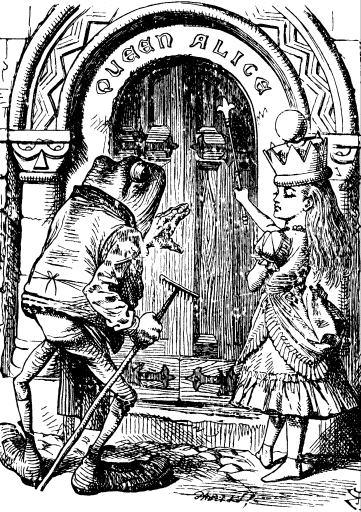

SHE took her off the table as she spoke, and shook her backwards and forwards with all her might.
The Red Queen made no resistance whatever; only her face grew very small, and her eyes got large and green: and still, as Alice went on shaking her, she kept on growing shorter--and fatter--and---
